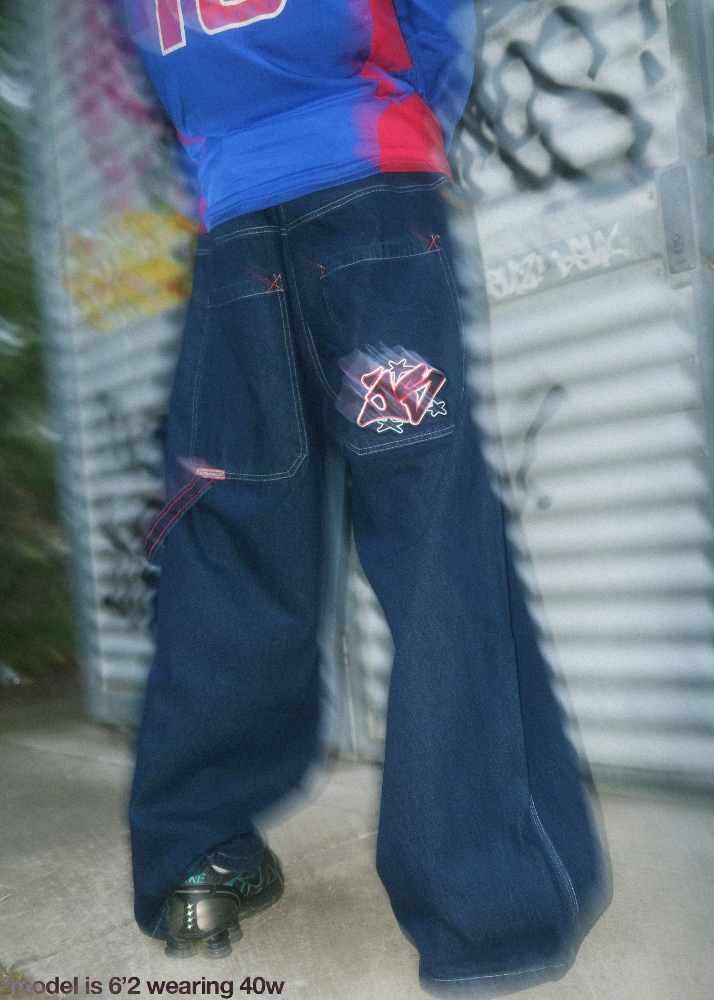

Jinzū.
2024.
This single run of jeans was a small wearable project inspired by the resurgence of 1990s baggy apparel seen over the past few years. Accelerated by social media and the rise of thrifting sites, baggy rave jeans were highly sought after. I identified a cultural overlap between this vintage apparel hype and retro cars/cams, and developed Jinzū to explore if there were any potential bridges.
Initially these were very popular, however I could not pivot enough to continuously capture a different audience without losing focus on my vehicle and camera content.
More on this project: https://www.instagram.com/p/DBGNFyASGZz/?img_index=1

Joy-Supply Jinzū Jeans. Denim, Brass rivets and zipper.